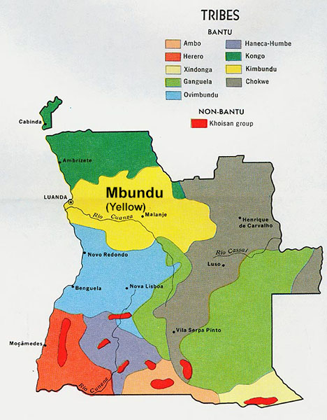
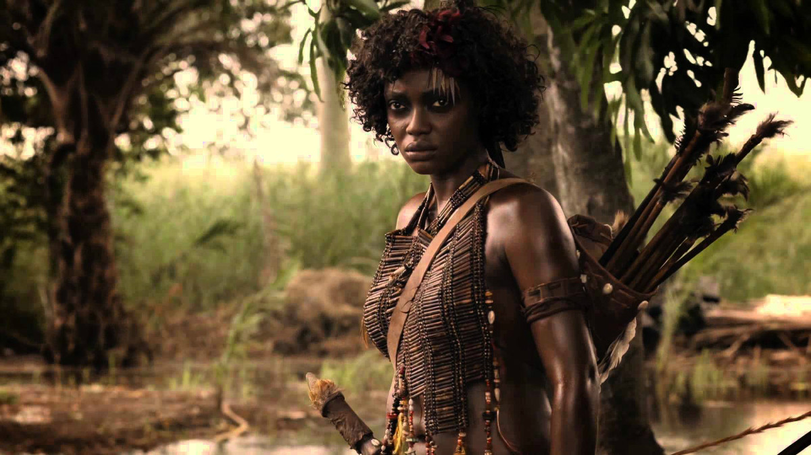
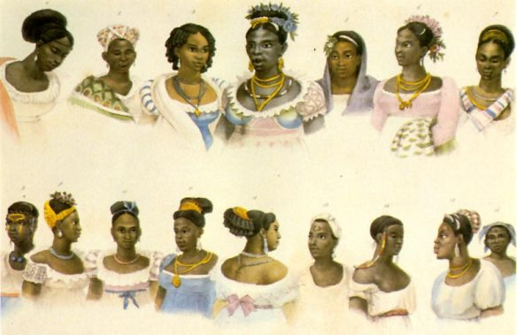
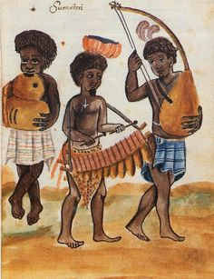
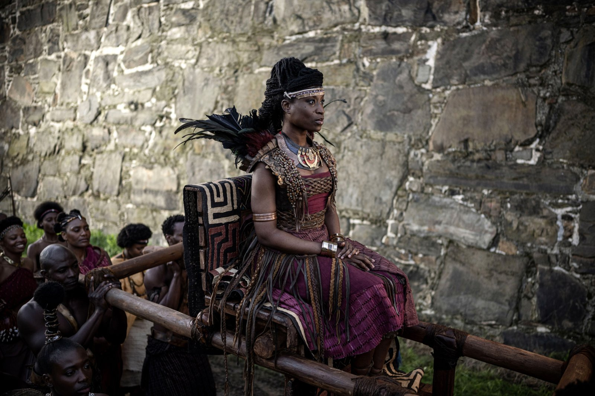
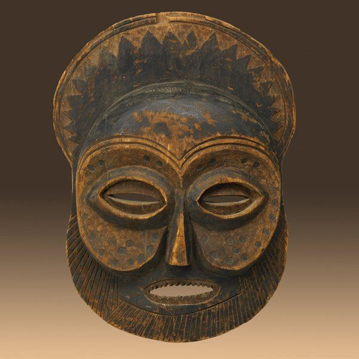
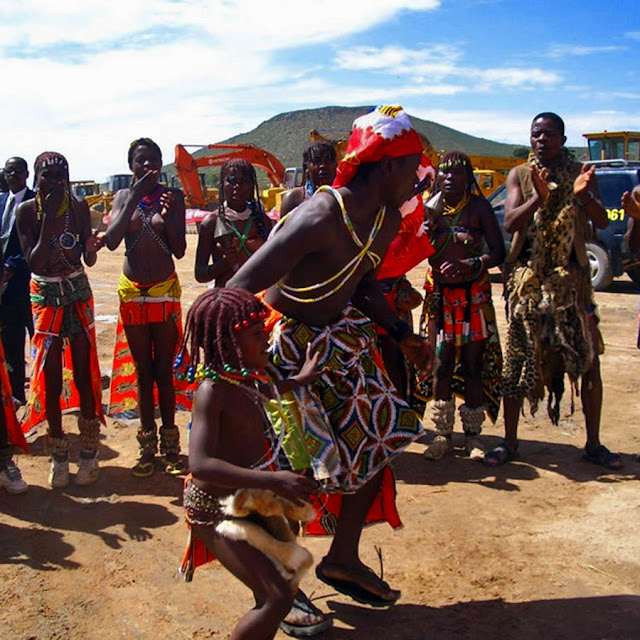

- Origem
O povo Mbundu, também conhecido como Ambundu, é um dos grupos etnolinguísticos mais antigos e importantes de Angola. A sua história remonta a vários séculos antes da chegada dos colonizadores europeus, principalmente os portugueses. Estima-se que os Mbundu tenham se estabelecido na região centro-norte do atual território angolano por volta do século XV, ocupando áreas férteis próximas ao rio Kwanza.
A origem dos Mbundu está ligada aos movimentos migratórios dos povos bantu, que se deslocaram do centro de África em direção ao sul e ao oeste. Esses povos trouxeram consigo a língua bantu, costumes agrícolas, organização social e uma visão comunitária da vida. Assim, os Mbundu se tornaram um dos principais representantes dessa herança bantu em Angola. Ao longo dos séculos, os Mbundu desenvolveram uma sociedade estruturada e complexa, que deu origem ao poderoso Reino do Ndongo, um dos reinos mais influentes da história angolana. O Ndongo foi governado por reis conhecidos como Ngolas, de onde surgiu o próprio nome “Angola”.
Geograficamente, os Mbundu se estabeleceram em regiões que hoje correspondem às províncias do Cuanza Norte, Cuanza Sul, Bengo, Malanje e Luanda, áreas de grande importância econômica e histórica. Essa localização contribuiu para o desenvolvimento de relações comerciais com outros povos africanos e com os europeus.
Apesar das transformações impostas pelo colonialismo, o povo Mbundu manteve viva a sua identidade, língua e valores. A sua capacidade de adaptação permitiu-lhes sobreviver às grandes mudanças históricas e preservar as suas raízes até aos dias de hoje.
- culturas
A cultura Mbundu é rica e diversificada, refletindo séculos de sabedoria, convivência comunitária e expressão artística. A língua principal falada por este povo é o Kimbundu, uma das línguas nacionais mais importantes de Angola, usada tanto em ambientes familiares como em cerimónias tradicionais.
Kimbundu é mais do que um meio de comunicação; é um símbolo de identidade e resistência cultural. Muitos nomes, expressões e músicas tradicionais ainda preservam o vocabulário antigo, mantendo viva a história e o pensamento dos antepassados Mbundu.
A vida social dos Mbundu é marcada pela importância da família alargada e da solidariedade comunitária. Cada membro da comunidade tem um papel a desempenhar, e o respeito pelos mais velhos é considerado um valor essencial na educação das novas gerações.A religião tradicional Mbundu é baseada no culto aos antepassados e à natureza. Acredita-se que os espíritos dos mortos protegem os vivos e que devem ser homenageados através de rituais, oferendas e danças. Essa ligação espiritual é um dos pilares da sua cultura.
A hospitalidade é outro traço marcante da cultura Mbundu. Os visitantes são sempre recebidos com comida, bebida e música, como forma de demonstração de amizade e respeito. Essa tradição continua viva, principalmente nas zonas rurais.
A identidade Mbundu é hoje uma combinação de tradição e modernidade, com muitos angolanos buscando resgatar as suas origens e valorizar a cultura Kimbundu como parte essencial da construção da nação.
As tradições Mbundu são passadas de geração em geração, preservando costumes que refletem a visão do mundo e a filosofia de vida deste povo. Muitas dessas tradições estão relacionadas à família, à natureza e à espiritualidade.
Uma das tradições mais importantes é a cerimónia de iniciação, que marca a passagem da infância para a vida adulta. Durante esse período, os jovens aprendem sobre os deveres da vida, a moral, o respeito e a história da sua comunidade.
O casamento tradicional Mbundu é outro evento cultural de grande importância. Ele envolve negociações entre as famílias, oferendas simbólicas e festas que podem durar vários dias. O dote, chamado “masaku”, representa respeito e união entre as famílias.
A maternidade e o nascimento são cercados de rituais que visam proteger a mãe e o bebê. O parto é assistido por mulheres experientes, e após o nascimento realiza-se uma celebração para agradecer aos antepassados pela nova vida.
As festas comunitárias são momentos de união e alegria, marcadas por danças, batuques e partilha de comida. Nessas ocasiões, o povo reafirma a sua identidade e renova os laços de solidariedade.
- Arte
A arte Mbundu é uma das expressões mais ricas da cultura angolana. Ela se manifesta em diferentes formas — escultura, música, dança, literatura oral e artesanato — refletindo a história, as crenças e a criatividade do povo. As máscaras e esculturas de madeira são alguns dos símbolos mais conhecidos da arte Mbundu. Elas representam espíritos, antepassados ou figuras míticas e são usadas em rituais, festas e cerimónias de iniciação.
A escultura não é apenas decorativa, mas também espiritual. Cada figura tem um significado simbólico e é cuidadosamente esculpida para invocar proteção, fertilidade ou sabedoria. A música tradicional Mbundu é rica em ritmos e instrumentos. O tambor (ngoma), a marimba e o kissanje (piano de dedo) são usados para acompanhar danças e cantos que transmitem mensagens sociais e religiosas.
A dança é inseparável da música e tem funções sociais específicas. Existem danças para celebrar casamentos, vitórias, colheitas e ritos de passagem. Cada movimento carrega um significado cultural e espiritual.
O artesanato Mbundu inclui cestarias, cerâmicas e tecidos coloridos, usados no dia a dia e também em ocasiões festivas. O uso de padrões geométricos e cores vivas é uma marca da sua estética tradicional.
Assim, a arte Mbundu não é apenas um património cultural, mas também uma ponte viva entre gerações, um testemunho da resistência e da beleza de um povo que continua a inspirar Angola e o mundo.